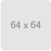

<div ng-controller="pickupController">
	<ul class="media-list">
		<li class="media">
		    <a class="pull-left" ng-href="#/view/1">
		        
		    </a>
		    <div class="media-body">
		        <h4 class="media-heading">メディアを左配置</h4>
			左よせ。
		    </div>
		</li>
		<li class="media">
		    <a class="pull-left" ng-href="/#/view/2">
		        
		    </a>
		    <div class="media-body">
		        <h4 class="media-heading">Left alignment</h4>
		        test
		    </div>
		</li>
	</ul>
</div>